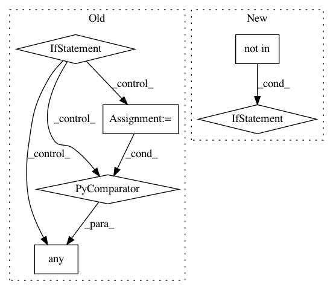

f7715f63c17832f66e54164cc0ae3cb0e4afc4a3,cleverhans/attacks.py,Attack,generate_np,#Attack#Any#,64
Before Change
hash_key = tuple(sorted(fixed.items()))
if not all(isinstance(value, collections.Hashable) for value in feedable.values()):
//TODO this is bad
raise
// try our very best to create a TF placeholder for each of the
// feedable keyword arguments by inferring the type
num_types = [int, float, np.float16, np.float32, np.float64,
np.int8, np.int16, np.int32, np.int32, np.int64,
np.uint8, np.uint16, np.uint32, np.uint64,
tf.float16, tf.float32, tf.float64,
tf.int8, tf.int16, tf.int32, tf.int32, tf.int64,
tf.uint8, tf.uint16]
new_kwargs = dict(x for x in fixed.items())
for name, value in feedable.items():
if isinstance(value, np.ndarray):
new_shape = [None]+list(value.shape[1:])
new_kwargs[name] = tf.placeholder(value.dtype, new_shape)
if any(isinstance(value, num) for num in num_types):
if isinstance(value, float):
new_kwargs[name] = tf.placeholder(tf.float32, shape=[])
elif isinstance(value, int):
After Change
// create a unique key for this set of fixed paramaters
hash_key = tuple(sorted(fixed.items()))
if hash_key not in self.graphs:
// try our very best to create a TF placeholder for each of the
// feedable keyword arguments by inferring the type
num_types = (int, float, np.float16, np.float32, np.float64,
np.int8, np.int16, np.int32, np.int32, np.int64,
np.uint8, np.uint16, np.uint32, np.uint64)
new_kwargs = dict(x for x in fixed.items())
for name, value in feedable.items():
if isinstance(value, np.ndarray):
new_shape = [None]+list(value.shape[1:])
new_kwargs[name] = tf.placeholder(value.dtype, new_shape)
if isinstance(value, num_types):
if isinstance(value, float):
// can"t instantiate placeholder with python float
// cast it to tf.float32 as that"s most likely
new_kwargs[name] = tf.placeholder(tf.float32, shape=[])
elif isinstance(value, int):
// can"t instantiate placeholder with python int
// cast it to tf.int32 as that"s most likely
new_kwargs[name] = tf.placeholder(tf.int32, shape=[])
else:
new_kwargs[name] = tf.placeholder(type(value), shape=[])
// x is a special placeholder we always want to have
x = tf.placeholder(tf.float32, shape=[None]+list(x_val.shape)[1:])
// now we generate the graph that we want
x_adv = self.generate(x, **new_kwargs)
if hash_key is not None:
// only save the graph if every fixed element is hashable
self.graphs[hash_key] = (x, new_kwargs, x_adv)
if len(self.graphs) == 10:
warnings.warn("Calling generate_np() with multiple different "
"structural paramaters is inefficient and should "
"be avoided. Calling generate() is preferred.")
if hash_key is not None:
// if it is None, we must have constructed it already
x, new_kwargs, x_adv = self.graphs[hash_key]
In pattern: SUPERPATTERN
Frequency: 3
Non-data size: 6
Instances
Project Name: tensorflow/cleverhans
Commit Name: f7715f63c17832f66e54164cc0ae3cb0e4afc4a3
Time: 2017-07-09
Author: nicholas@carlini.com
File Name: cleverhans/attacks.py
Class Name: Attack
Method Name: generate_np
Project Name: ericmjl/pyjanitor
Commit Name: b5dca485575de7052f2ce8f39ea845e848e1ac89
Time: 2020-12-09
Author: samueloranyeli@gmail.com
File Name: janitor/functions.py
Class Name:
Method Name: fill_direction
Project Name: beancount/smart_importer
Commit Name: ca3bdae5c96285176860d039adeef6ac6be00393
Time: 2020-11-19
Author: aaron@aclindsay.com
File Name: smart_importer/predictor.py
Class Name: EntryPredictor
Method Name: training_data_filter